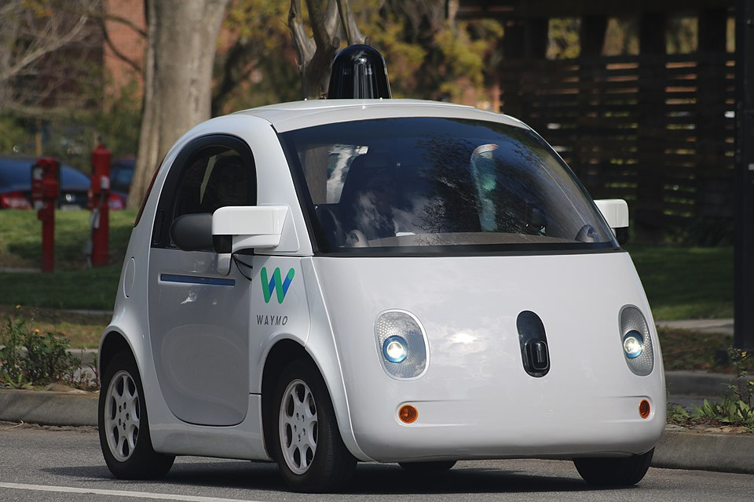

자율주행차의 *진짜* 출발점이 어디인지 — 혹시 아세요? 2004년 3월, 미국 국방부 산하 *DARPA*라는 곳이 한 *이상한 대회*를 엽니다. 코스는 모하비 사막 240km, 운전자 없는 차로 끝까지 가야 한다 — 우승 상금 100만 달러.
결과는 — 참혹했습니다. 11대 출전, 그 중 가장 멀리 간 차가 11.78km. 전체 코스의 *5%*도 못 갔지요. 그래서 우승자도, 상금도 — 그날 주인을 찾지 못했습니다.
그러나 1년 뒤 2005년 두 번째 대회에서, 스탠퍼드 Sebastian Thrun 팀의 ‘Stanley’가 7시간 만에 결승선을 통과합니다. 실패한 한 대회가 — 자율주행 산업 전체의 출발선이 된 셈입니다.

Waymo — DARPA의 후예가 도시로 나오다